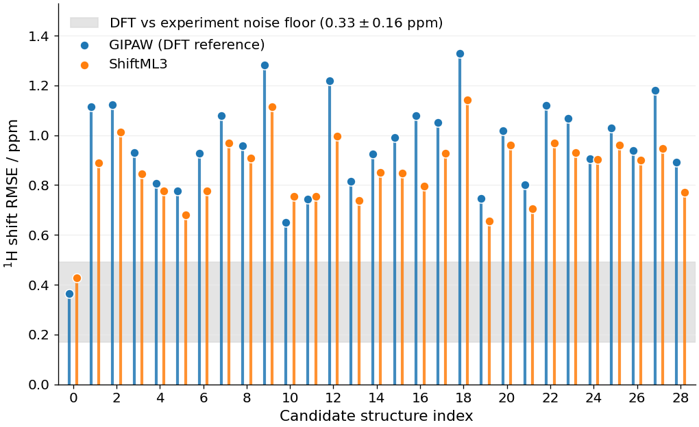

Note
Go to the end to download the full example code.
NMR-shielding-driven structure determination with ShiftML3¶
- Authors:
Joseph W. Abbott @jwa7; Matthias Kellner @bananempampe
This recipe shows how to use a fast machine-learning surrogate for ab initio NMR chemical-shielding calculations – ShiftML3 – to pick out an experimentally observed crystal structure from a pool of candidate polymorphs. In a nutshell, the NMR-shielding-driven structure determination protocol, also sometimes referred to as NMR crystallography or NMR crystal-structure prediction (NMR-CSP), aims to enhance the confidence in a classical crystal structure prediction (CSP) workflow by anchoring the final structure selection step to experimental solid-state NMR data. This method is particularly useful to determine the structure of organic solids, for which it is difficult to obtain single crystals suitable for X-ray diffraction, or to unambiguously determine protonation states who cannot be resolved by XRD.
We work through the cocaine benchmark from Paruzzo et al., Nat. Commun. (2018), where the pool consists of geometry-optimized candidate structures of solid cocaine and a measured solid-state 1H spectrum is available for comparison.
The basic workflow of NMR crystallography is:
enumerate candidate structures (typically by computational crystal-structure prediction workflows);
compute 1H chemical shieldings for each candidate (traditionally with GIPAW-DFT, here with the ML-accelerated ShiftML3 model);
assign each predicted shielding to one of the experimentally observed chemical-shift peaks;
score each candidate against experiment via a calibrated RMSE;
take the structure with the lowest RMSE as the best match.
The chemical shielding is a rank-2 Cartesian tensor; its isotropic part (the trace divided by three) is rotation-invariant and is the quantity we use here for structure matching, as they are the observable most reliably measured using solid-state NMR spectroscopy. For background on running ShiftML3 itself – calculator setup, ensemble uncertainties, anisotropic tensor predictions – see the companion recipe Computing NMR shielding tensors using ShiftML. For background on learning and predicting rotationally equivariant tensor properties, see the polarizability recipe and the rotating-equivariants recipe.
This recipe is meant to be a starting point for users interested in applying ShiftML3 to their own NMR crystallography problems. Note however that modern shielding-driven NMR-CSP workflows make use of more sophisticated similarity measures than the simple RMSE used here and often combine information from multiple nuclei, as well as carefully calibrated shielding-to-shift regressors. This recipy should only serve as a demonstration of the basic workflow.
Chemical shifts, chemical shieldings, and structure matching¶
A solid-state NMR experiment on a powdered organic solid reports a set of chemical shifts \(\delta_i\) (in ppm), one for each magnetically distinct nuclear site \(i\). Computationally, what is naturally accessible is the chemical shielding \(\sigma_i\) – the response of the local electronic structure to an applied magnetic field. The two are related by an approximately linear calibration,
where the slope \(a \approx -1\) (since shielding reduces the resonance frequency, while chemical shift is measured relative to a reference compound such as TMS for 1H), and \(b\) is the shielding of the reference compound. The constants \(a\) and \(b\) depend on the level of theory used to compute \(\sigma\), and are usually obtained by linear regression against a benchmark of known experimental shifts.
Given a candidate structure \(X\), we predict \(\{\sigma_i(X)\}\) for the relevant nuclei, calibrate via the linear form above to obtain predicted shifts \(\{\delta_i^{\,\mathrm{pred}}(X)\}\), and compute the RMSE against the assigned experimental shifts:
The candidate \(X^\star\) minimising this score is taken as the best match. The reason this works as a structural fingerprint is that the chemical shielding at a nucleus is highly sensitive to changes in its local environment, so different polymorphs produce visibly different 1H spectra.
Until recently this workflow relied on GIPAW-DFT shielding calculations, at a cost of typically hundreds of CPU-hours per candidate. Instead ShiftML3, an ensemble of 8 PET models trained on shieldings computed at the PBE/GIPAW level for ~14k molecular crystals from the Cambridge Structural Database (Kellner et al., J. Phys. Chem. Lett. (2025)), delivers comparable accuracy in only a matter of seconds per candidate.
The cocaine benchmark dataset¶
We use a curated set of 29 cocaine candidate crystal structures with pre-computed GIPAW shieldings, provided together with the original ShiftML release (Paruzzo et al., Nat. Commun. (2018)) and hosted on Materials Cloud. The same archive is used by the introductory ShiftML recipe.
from typing import OrderedDict
import os
import zipfile
import chemiscope
import matplotlib.pyplot as plt
import numpy as np
from ase.io import read
from atomistic_cookbook_utils import download_with_retry
from shiftml.ase import ShiftML
from sklearn.metrics import root_mean_squared_error
# Download the reference chemical shieldings
filename = "ShiftML_poly.zip"
download_with_retry(
"https://archive.materialscloud.org/records/j2fka-sda13/files/ShiftML_poly.zip",
filename,
)
# Extract the .xyz file containing the reference data
with zipfile.ZipFile(filename, "r") as zip_ref:
file = "ShiftML_poly/Cocaine/cocaine_QuantumEspresso.xyz"
target = os.path.basename(file)
with zip_ref.open(file) as source, open(target, "wb") as dest:
dest.write(source.read())
# Load the frames
frames = read("cocaine_QuantumEspresso.xyz", ":")
print(f"Loaded {len(frames)} candidate cocaine structures")
print(f"Atoms per unit cell: {len(frames[0])}")
print(f"Per-atom arrays available: {list(frames[0].arrays.keys())}")
Loaded 29 candidate cocaine structures
Atoms per unit cell: 86
Per-atom arrays available: ['numbers', 'positions', 'CS']
Browse the candidate pool interactively with chemiscope
chemiscope.show(
frames,
mode="structure",
settings=chemiscope.quick_settings(
trajectory=True, structure_settings={"unitCell": True}
),
)

Each structure carries a CS array of GIPAW-computed shieldings, one entry per
atom. We will use those values both as the reference DFT predictions and to illustrate
that ShiftML3 reproduces DFT-level accuracy on this task at a fraction of the cost.
print(
"atom types (every tenth atom; 1 = H, 6 = C, 8 = O):",
frames[0].arrays["numbers"][::10],
)
print(
"chemical shieldings (every tenth atom):", frames[0].arrays["CS"][::10]
) # GIPAW shieldings for the first 10 atoms of the first candidate
atom types (every tenth atom; 1 = H, 6 = C, 8 = O): [6 6 6 6 8 1 1 1 1]
chemical shieldings (every tenth atom): [ 100.01 147.62 34.73 -10.69 -104.2 27.19 28.43 22.47 26.47]
Experimental 1H shifts and atom labelling¶
Cocaine has 21 protons, but only 17 chemically distinct proton sites. The experimental 1H spectrum of cocaine, assigned to its 17 chemically distinct proton sites, is reproduced in the supplementary information of Paruzzo et al.
The dict below pairs an experimental shift (in ppm) with the corresponding 1-based
atom index in the asymmetric unit - while there may be multiple molecules per unit
cell, the shifts are indexed by unique index within a single molecule. Entries like
"11,12,13" denote chemically equivalent protons (e.g. a rotating methyl) whose
predicted shieldings should be averaged before being compared with the single observed
peak.
assigned_experimental_shifts = OrderedDict(
{
"1": 3.76,
"2": 3.78,
"3": 5.63,
"4": 3.32,
"5": 3.49,
"6": 3.06,
"7": 2.91,
"8": 3.38,
"9": 2.56,
"10": 2.12,
"11,12,13": 1.04,
"14": 8.01,
"15": 8.01,
"16": 8.01,
"17": 8.01,
"18": 8.01,
"19,20,21": 3.78,
}
)
NUM_H_PER_MOLECULE = 21
print(f"Comparing {len(assigned_experimental_shifts)} assigned 1H environments")
Comparing 17 assigned 1H environments
The cocaine crystal contains two molecules per unit cell, so we take the
first molecule’s hydrogens and average shieldings over symmetry-equivalent
groups (e.g. the three methyl protons "11,12,13" share a single
observed NMR peak).
def assign_shieldings(per_h_shieldings, assigned_experimental_shifts):
"""
Pick one cocaine molecule's H shieldings out of the unit cell and average over the
symmetry-equivalent groups listed in ``assigned_experimental_shifts``.
"""
per_mol = per_h_shieldings.reshape(NUM_H_PER_MOLECULE, -1)[:, 0]
out = []
for atom_string in assigned_experimental_shifts.keys():
idx = [int(s) - 1 for s in atom_string.split(",")]
out.append(per_mol[idx].mean())
return np.array(out)
Predicting shieldings with ShiftML3¶
We instantiate the ShiftML3 surrogate model as the calculator for the shieldings
tensors. The get_cs_iso method computes this tensor and returns the isotropic part
(the mean trace) of the passed candidate frame for every atom in the unit cell.
As we are only interested in the hydrogen spectrum in this exercise, we filter the redictions only the the H atoms (atomic number 1) before passing them to the assignment function above.
Inference on the full set of 29 cocaine candidates takes a matter of seconds on a single CPU/GPU. Remember that the GIPAW reference for the same task takes hundreds of CPU-hours.
calculator = ShiftML("ShiftML3")
shieldings_sml = [] # ShiftML3-predicted shieldings
shieldings_gipaw = [] # GIPAW reference shieldings
for frame in frames:
is_h = frame.get_atomic_numbers() == 1 # mask for H atoms
sml = calculator.get_cs_iso(frame).ravel()[is_h] # model predictions
shieldings_sml.append(assign_shieldings(sml, assigned_experimental_shifts))
gipaw = frame.arrays["CS"][is_h] # GIPAW reference
shieldings_gipaw.append(assign_shieldings(gipaw, assigned_experimental_shifts))
shieldings_sml = np.array(shieldings_sml)
shieldings_gipaw = np.array(shieldings_gipaw)
2026-06-08 11:26:37,005 - INFO - Found model version in url_resolve
2026-06-08 11:26:37,005 - INFO - Resolving model version to model files at url: https://zenodo.org/records/15767390/files/model_0.pt?download=1
2026-06-08 11:26:37,006 - INFO - Model not found in cache, downloading it
2026-06-08 11:26:49,509 - INFO - Downloaded ShiftML30 and saved to /home/runner/.cache/shiftml/ShiftML30
2026-06-08 11:26:49,668 - INFO - Found model version in url_resolve
2026-06-08 11:26:49,668 - INFO - Resolving model version to model files at url: https://zenodo.org/records/15767390/files/model_1.pt?download=1
2026-06-08 11:26:49,669 - INFO - Model not found in cache, downloading it
2026-06-08 11:27:01,639 - INFO - Downloaded ShiftML31 and saved to /home/runner/.cache/shiftml/ShiftML31
2026-06-08 11:27:01,807 - INFO - Found model version in url_resolve
2026-06-08 11:27:01,808 - INFO - Resolving model version to model files at url: https://zenodo.org/records/15767390/files/model_2.pt?download=1
2026-06-08 11:27:01,808 - INFO - Model not found in cache, downloading it
2026-06-08 11:27:14,686 - INFO - Downloaded ShiftML32 and saved to /home/runner/.cache/shiftml/ShiftML32
2026-06-08 11:27:14,838 - INFO - Found model version in url_resolve
2026-06-08 11:27:14,838 - INFO - Resolving model version to model files at url: https://zenodo.org/records/15767390/files/model_3.pt?download=1
2026-06-08 11:27:14,839 - INFO - Model not found in cache, downloading it
2026-06-08 11:27:26,742 - INFO - Downloaded ShiftML33 and saved to /home/runner/.cache/shiftml/ShiftML33
2026-06-08 11:27:26,895 - INFO - Found model version in url_resolve
2026-06-08 11:27:26,895 - INFO - Resolving model version to model files at url: https://zenodo.org/records/15767390/files/model_4.pt?download=1
2026-06-08 11:27:26,896 - INFO - Model not found in cache, downloading it
2026-06-08 11:27:40,346 - INFO - Downloaded ShiftML34 and saved to /home/runner/.cache/shiftml/ShiftML34
2026-06-08 11:27:40,502 - INFO - Found model version in url_resolve
2026-06-08 11:27:40,502 - INFO - Resolving model version to model files at url: https://zenodo.org/records/15767390/files/model_5.pt?download=1
2026-06-08 11:27:40,502 - INFO - Model not found in cache, downloading it
2026-06-08 11:27:55,325 - INFO - Downloaded ShiftML35 and saved to /home/runner/.cache/shiftml/ShiftML35
2026-06-08 11:27:55,480 - INFO - Found model version in url_resolve
2026-06-08 11:27:55,480 - INFO - Resolving model version to model files at url: https://zenodo.org/records/15767390/files/model_6.pt?download=1
2026-06-08 11:27:55,480 - INFO - Model not found in cache, downloading it
2026-06-08 11:28:07,288 - INFO - Downloaded ShiftML36 and saved to /home/runner/.cache/shiftml/ShiftML36
2026-06-08 11:28:07,442 - INFO - Found model version in url_resolve
2026-06-08 11:28:07,442 - INFO - Resolving model version to model files at url: https://zenodo.org/records/15767390/files/model_7.pt?download=1
2026-06-08 11:28:07,442 - INFO - Model not found in cache, downloading it
2026-06-08 11:28:21,861 - INFO - Downloaded ShiftML37 and saved to /home/runner/.cache/shiftml/ShiftML37
Calibrating shielding to shift¶
To compare predictions to experiment we need to map shieldings to shifts via \(\delta = a\,\sigma + b\). Two parameters, two choices to make.
Slope. Chemical shift and chemical shielding are defined so that \(\delta \approx -\sigma + \sigma_{\mathrm{ref}}\), i.e. the slope is exactly \(-1\) if both quantities are perfectly consistent. Letting the slope float effectively rescales the predicted spectrum, which lets every candidate cheat its way to a better RMSE and erodes the discrimination between polymorphs. We therefore fix \(a = -1\).
Intercept. \(b\) is the shielding of the reference compound used experimentally (TMS for 1H). It is not known a priori for an arbitrary candidate pool, so we fit it per-structure — equivalent to saying we compare spectral patterns, not absolute shifts. Concretely, for each candidate the intercept is set to the value that makes the predicted and experimental shifts coincide on average, \(b = \overline{\delta^{\,\mathrm{exp}}} - a\,\overline{\sigma^{\,\mathrm{pred}}}\).
def calibrated_rmse(
shieldings_per_candidate,
experimental_shifts,
slope=-1.0,
intercept=None,
):
"""RMSE for each candidate after fitting the intercept that aligns the
predicted and experimental shift means."""
rmses = []
for sigmas in shieldings_per_candidate:
if intercept is None:
intercept = np.mean(experimental_shifts) - slope * np.mean(sigmas)
predicted_shifts = slope * sigmas + intercept
rmses.append(root_mean_squared_error(predicted_shifts, experimental_shifts))
return np.array(rmses)
An alternative is to apply a single global calibration – e.g. the values determined by Kellner et al. by regressing predicted ShiftML3 shieldings against experimental shifts on a held-out benchmark of organic crystals. That is preferred when you also care about absolute shift accuracy; for ranking candidates by spectral pattern, the per-structure scheme above gives the same answer with one fewer parameter to argue about.
Note that the regression parameters can be attributed to systematic errors in the DFT functional used to compute shieldings and relax geometries, hence for each pair of NMR-functional and geometry-functional, the optimal calibration parameters need to be determined individually.
In the function above, these global calibration parameters can be passed in the
slope and intercept arguments, which are then applied to all candidates. We
attach them there but leave them at the default values for the rest of this recipe,
which performs a per-structure intercept fit with the slope pinned at \(-1\).
# Calibrate shieldings -> shifts
experimental_shifts = np.array(list(assigned_experimental_shifts.values()))
rmse_sml = calibrated_rmse(
shieldings_sml, experimental_shifts, slope=-1.0, intercept=None
)
rmse_gipaw = calibrated_rmse(
shieldings_gipaw, experimental_shifts, slope=-1.0, intercept=None
)
# Find the best candidate (lowest RMSE vs experiment)
best = int(np.argmin(rmse_sml))
print(f"Best ShiftML3 match: candidate #{best} (RMSE = {rmse_sml[best]:.3f} ppm)")
print(
f"Best GIPAW match: candidate #{int(np.argmin(rmse_gipaw))} "
f"(RMSE = {rmse_gipaw.min():.3f} ppm)"
)
Best ShiftML3 match: candidate #0 (RMSE = 0.429 ppm)
Best GIPAW match: candidate #0 (RMSE = 0.364 ppm)
The lollipop diagram¶
The canonical visualisation for this task is the lollipop diagram: RMSE vs candidate index, plotted as a stem plot. We overlay the ShiftML3 prediction (orange) and the GIPAW reference (blue). The shaded band at \(0.33 \pm 0.16\,\mathrm{ppm}\) marks the irreducible spread of GIPAW-vs-experiment errors estimated by Salager et. al, JACS (2010) across a benchmark of molecular solids: candidates with RMSEs in this range are, statistically, indistinguishable from experiment.
def make_lollipop_plot(frames, rmse_gipaw, rmse_sml):
"""Plots the lollipop plot comparing the RMSE of the GIPAW and ShiftML3 predictions
against experiment for each candidate structure."""
candidate_idx = np.arange(len(frames))
dx = 0.18
fig, ax = plt.subplots(figsize=(8.5, 5.2), constrained_layout=True, dpi=120)
band_lo, band_hi = 0.33 - 0.16, 0.33 + 0.16
ax.axhspan(
band_lo,
band_hi,
color="0.85",
alpha=0.7,
zorder=0,
label=r"DFT vs experiment noise floor ($0.33 \pm 0.16$ ppm)",
)
ax.vlines(
candidate_idx - dx, 0, rmse_gipaw, color="C0", lw=2.5, alpha=0.85, zorder=2
)
ax.vlines(candidate_idx + dx, 0, rmse_sml, color="C1", lw=2.5, alpha=0.85, zorder=2)
ax.scatter(
candidate_idx - dx,
rmse_gipaw,
color="C0",
label="GIPAW (DFT reference)",
s=60,
edgecolor="white",
lw=0.9,
zorder=3,
)
ax.scatter(
candidate_idx + dx,
rmse_sml,
color="C1",
label="ShiftML3",
s=60,
edgecolor="white",
lw=0.9,
zorder=3,
)
ax.set_xlabel("Candidate structure index", fontsize=13)
ax.set_ylabel(r"$^1$H shift RMSE / ppm", fontsize=13)
ax.tick_params(axis="both", labelsize=12)
ax.set_xticks(candidate_idx[::2])
ax.set_xlim(-0.7, len(frames) - 0.3)
ax.set_ylim(0, max(rmse_sml.max(), rmse_gipaw.max()) * 1.15)
ax.grid(axis="y", color="0.92", lw=0.6, zorder=0)
ax.spines[["top", "right"]].set_visible(False)
ax.legend(loc="upper left", frameon=False, fontsize=12)
make_lollipop_plot(frames, rmse_gipaw, rmse_sml)

Two things stand out:
ShiftML3 tracks the DFT reference candidate-by-candidate. The orange stems closely follow the blue ones, confirming that the ShiftML model is transferable and acts almost as a drop-in replacement for GIPAW-DFT.
The minimum is unambiguous. The best-matching candidate sits well below the rest of the pool, inside the experimental noise band – this is the structure that best reproduces the measured spectrum. The other candidates carry markedly larger RMSEs and can be confidently rejected.
Browsing parity plots linked to crystal structure¶
The parity plot (x = GIPAW reference shift, y = ShiftML3 predicted shift) has one point per H atom in the dataset. Each point is linked to its atom in the structure viewer.
Here we sort candidates by ShiftML3 RMSE (in ascending order). Step through the trajectory to watch the parity plot evolve: the best candidate scatters tightly around \(y = x\), while poor candidates show structured residuals – specific protons whose shifts are systematically off because they sit in chemically wrong environments.
The H-atom environments in the chemiscope viewer have been set to have a local neighborhood of 10 Å, with atoms outisde this greyed-out. This value represents the effective cutoff (i.e., receptive field) of the ShiftML3 model (a base cutoff of 5 Å, with 2 message passing layers).
This helps to visualize the locality of the model: in principle only geometric information from atoms within this sphere influence the prediction on a given atom.
# Sort frames and the shieldings by the RMSE vs experiment
sort_order = np.argsort(rmse_sml)
frames_sorted = [frames[i] for i in sort_order]
X_sml_sorted = shieldings_sml[sort_order]
X_gipaw_sorted = shieldings_gipaw[sort_order]
# Convert shieldings to shifts with the same per-structure calibration as above
slope = -1.0
pred_sml = (
slope * X_sml_sorted
+ (
np.mean(list(assigned_experimental_shifts.values()))
- slope * X_sml_sorted.mean(axis=1)
)[:, None]
)
pred_gipaw = (
slope * X_gipaw_sorted
+ (
np.mean(list(assigned_experimental_shifts.values()))
- slope * X_gipaw_sorted.mean(axis=1)
)[:, None]
)
# Build the atomic environments for viewing
site_for_h = np.empty(NUM_H_PER_MOLECULE, dtype=int)
for site_idx, atom_string in enumerate(assigned_experimental_shifts.keys()):
for j in [int(s) - 1 for s in atom_string.split(",")]:
site_for_h[j] = site_idx
environments = []
gipaw_env = []
sml_env = []
for A, frame in enumerate(frames_sorted):
h_counter = 0
for i, atom_type in enumerate(frame.numbers):
if atom_type == 1:
environments.append((A, i, 10.0))
site = site_for_h[h_counter % NUM_H_PER_MOLECULE]
gipaw_env.append(pred_gipaw[A, site])
sml_env.append(pred_sml[A, site])
h_counter += 1
chemiscope.show(
frames_sorted,
properties={
"GIPAW shift / ppm": np.array(gipaw_env),
"ShiftML3 shift / ppm": np.array(sml_env),
},
environments=environments,
)
Calibration choices and their effect¶
We used a per-structure intercept fit with the slope pinned at \(-1\). Two alternatives are worth being aware of:
Per-structure free fit. Also let the slope float, fitting it independently for each candidate. Because every candidate gets two free parameters instead of one, the RMSEs shrink overall and the gap between the correct structure and the rest tends to narrow. This makes the ranking less diagnostic and is generally not recommended for structure matching.
Global calibration. Use the slope/intercept obtained by Kellner et al. on a held-out experimental benchmark (\(a = -0.9024,\, b = 28.05\,\mathrm{ppm}\) for the ShiftML3 1H output). Preferred when you also care about absolute 1H shift accuracy; for the ranking task here it gives the same winner with slightly inflated RMSEs across the pool.
Note that in many cases, the regression slope can be attributed to systematic errors in the potential energy surface used to generate the candidate pool, or the neglectance of finite temperature effects and quantum delocalization of acidic protons (Kellner et al.). Here we use geometries relaxed at the PBE-D2 level of theory and at 0K.
Outlook¶
The same workflow can be repeated for a different cocaine-class molecule, AZD8329,
whose dataset is included in the same Materials Cloud archive under
ShiftML_poly/AZD/AZD_QuantumEspresso.xyz. The assignment list and experimental
shifts for AZD8329 are given in Cordova et al.
Going beyond isotropic shifts, ShiftML3 also predicts the full chemical shielding tensor for each atom. The introductory ShiftML recipe shows how to extract and visualise this tensor with chemiscope ellipsoids; the anisotropic information can be incorporated into the structure-matching score whenever experimental CSA values are available, typically improving the discrimination between candidates that have similar isotropic spectra.
Modern NMR-CSP workflows move to more sophisticated similarity measures between computed and experimental values, such as full bayesian treatment, considering also prediction uncertainties of the ML model (Engel et al.) and metrics that allow for combining NMR measurements of different nuclei in the structure selection process (Mueller et al.).
Total running time of the script: (3 minutes 2.680 seconds)